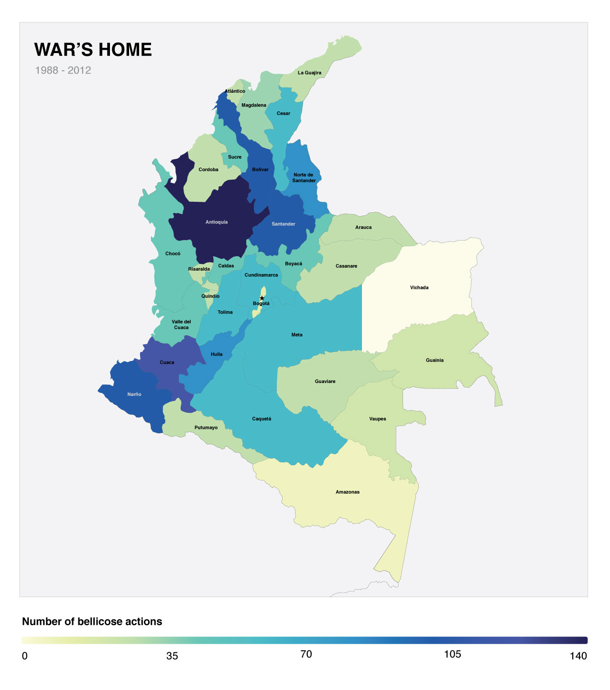

View the Project on GitHub Maria Alejandra Sandoval/final-project
In Colombia everyone talk about conflict, everyone talks about war, but hardly anyone understand it over time. Out side Colombia people lable us as narcos, skilled militia or the most beautiful women in the world. Hardly anyone recognize the heavy weigth of war in our eyes. This project is a personal reflection of the "art" of war during just 14 years of decades of conflict in Colombia. It's an attempt to use numbers to tell a small part of the story and led you make your own conclusions about this war.
For me it is an opportunity to reframe thinking. Who are perpetrators? Who are victims? How does war look like? Which war techniques are more efficient? How much have we changed over time? Have we learned something?
“But if they had learned anything together, it was that wisdom comes to us when it can no longer do any good.” Gabriel Garcia Marquez
In a polarized country which wisdom are we building to move forward?
The art of warThis map focus on visualizing the types of bellicose acts and the number of victims from these acts over time.
Combat:purposeful violent conflict meant to weaken, establish dominance over, or kill the opposition, or to drive the opposition away from a location where it is not wanted or needed.
Raid:military tactic or operational warfare mission which has a specific purpose and is not normally intended to capture and hold terrain, but instead finish with the raiding force quickly retreating to a previous defended position prior to enemy forces being able to respond in a co-ordinated manner or formulate a counter-attack.
Ambush:a long-established military tactic in which combatants take advantage of concealment and the element of surprise to attack unsuspecting enemy combatants from concealed positions, such as among dense underbrush or behind hilltops.
Attack to military target: An attack or action must be intended to help in the military defeat of the enemy, it must be an attack on a military objective,[1] and the harm caused to civilians or civilian property must be proportional and not excessive in relation to the concrete and direct military advantage anticipated.
Bombing:military strategy used in a total war with the goal of defeating the enemy by destroying its morale or its economic ability to produce and transport materiel to the theatres of military operations, or both.
Harrasement: Attack by surprise to a military installation using bursts of long or short weapons, or explosives.
This map focus on territory. It intents to show the amount of bellicose acts that took place on the different departments.
 The sides of warThis chart focus on the different types of victims: the fighters and the civilianz. It show the different groups involved in war, they prefered war tactics, the number of victims form this bellicose actions and the type of victims.
For this visualization I used Civilianz death in bellicose actions from the Colombian Center of Historic Memory. I choose this dataset because it describe in detail the date and location of the event, also the responsable group of the action and the number of victims.
It is important to say that the data used exclude civilianz used as human shield, terrorist attacks, antipersonnel mines, ammunition without exploating and sabotage.